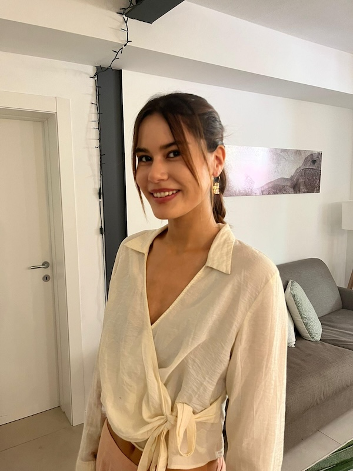

Katharina Trinley
About
Hi, I'm Katharina [kataˈʁiːna], a PhD student at the Trustworthy AI Lab at the University of Hamburg, supervised by Anne Lauscher and Jae Hee Lee. I research mechanistic interpretability, bias mitigation and multilinguality, and I'm trying to get multi-agent systems to behave ethically. Say hello any time. I'm also happy to talk about painting, hiking, chess and cats.
Papers
- A Mechanistic Understanding of Pronoun Fidelity in LLMs
- The Latin Substrate: How Language Models Represent and Mediate Script Choice
- Language Arithmetics: Towards Systematic Language Neuron Identification and Manipulation
- What language(s) does aya-23 think in? How multilinguality affects internal language representations
- Multilingual Political Views of Large Language Models: Identification and Steering
Timeline
- 3 Sep 2026 Our paper The Latin Substrate was accepted at BlackBoxNLP 2026!
- 15 Aug 2026 Moved to Hamburg to start my PhD at the Trustworthy AI Lab with Anne Lauscher and Jae Hee Lee.
- 15–26 Jun 2026 Two weeks at the Machine Learning Summer School at Columbia University in New York. Learned a lot, and left with a few good friends.
- 2025 Two papers from my time in Trento were accepted at IJCNLP-AACL 2025: Language Arithmetics (main) and Multilingual Political Views (findings).
- 2025 Our paper What Language(s) Does Aya-23 Think In? got accepted to GlobalNLP@RANLP 2025.
- Feb – Aug 2025 Exchange semester at the University of Trento, on an Erasmus+ scholarship for international mobility.
- 13–15 Nov 2024 Took part in a winter school on Explainable Decision Making at Schloss Dagstuhl.
- Oct 2024 – Jul 2025 Junior researcher at DFKI, working on energy-efficient AI for data centers.
- 16–18 May 2024 Co-organized the 33rd TaCoS (Tagung der Computerlinguistik-Studierenden).
- Oct 2023 Started my Master's in Language Science & Technology at Saarland University.
- Oct 2021 – Oct 2023 Research assistant in psycholinguistics with Margarita Ryzhova and Vera Demberg at Saarland University.